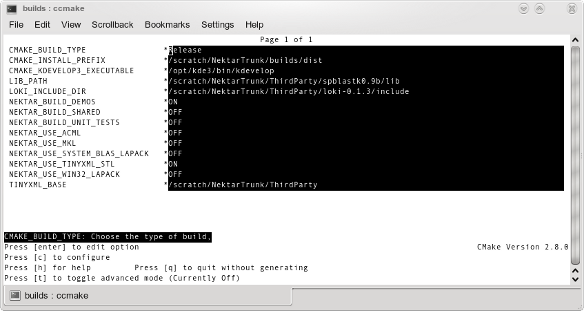

Compile Instructions
Linux - GCC / kDevelop
-
Setting up GCC
-
Organizing the ThirdParty Source Files
-
Setting up BLAS
-
Generating the GCC Makefiles with CMake
-
Compiling the Solvers and Utilities
-
Compiling the Regression Tests
Setting up GCC
In order to compile Nektar++, you must have a newer version of GCC installed. GCC 4.1 and newer will work, but 4.2 or newer is recommended. Below I will give instructions on how to check the GCC version number, and installing a new version if it is too old.
-
At the terminal, type If the last line says the version number is 4.1 or newer, skip to the next section; otherwise you may continue to read.
gcc -v
- You may either ask your system administrator to perform this upgrade for you (recommended), or install GCC in to your local account. If you choose the first option, wait for the new installation and then continue to the next section.
- First, go to http://gcc.gnu.org/mirrors.html and select a mirror. Download a 4.1 or later GCC release from the mirror you select (you probably want to select the newest version).
-
Go to http://gcc.gnu.org/install/ and follow the instructions to install GCC. It is too complicated and error prone to cover everything here. Install at least the C, C++, and Fortran compilers. Once "gcc -v" outputs a version later than 4.1, you can continue to the next section.
The general setup instructions are as follows. However, there might be dependencies that need to be installed.
tar -xvjf <filename>.tar.bz2
cd <new_gcc_directory>
mkdir MyObj
cd MyObj
../configure --prefix=<install_path>
--enable-languages=c,c++,fortran
make
make installSet your path:
-
for (T)CSH Shells
setenv PATH <install_path>:$PATH
-
for BASH Shells
export PATH=<install_path>:$PATH
It may be useful to add this to your login script.
-
for (T)CSH Shells
Organizing the ThirdParty Source Files
Nektar++ requires additional software to function. Many of these libraries are included in a typical distribution and so not all the library sources provided in the ThirdParty directory may be needed. However, while unlikely, the version provided by your distribution may not be compatible with the current build of Nektar++. If you encounter problems, you should first link to those versions distributed in the ThirdParty distribution.
You will be given a Nektar++ directory and a ThirdParty directory (includes needed libraries from other sources). These need to be organized into the correct directory hierarchy for CMake to find all of the required files. I will indicate a directory by following its name with a forward slash.
- Unpack the ThirdParty-3.x.x.tar.gz file. Rename the resulting directory to ThirdParty/ and put it in Nektar++/. (This will mean library/ and ThirdParty/ are both sub-directories of the original Nektar++/.)
-
At the terminal in ThirdParty/, extract the tinyxml_2_4_3.zip archive with
unzip tinyxml_2_4_3.zip
This will create tinyxml/.
-
Extract the loki-0.1.3.tar.bz2 archive with
tar -xjvf loki-0.1.3.tar.bz2
This will create loki-0.1.3/.
-
CMake is an open-source, cross-platform make file generator system. We will use it to generate the needed makefiles to compile Nektar++. We require version 2.8 or greater. To check your currently installed version, type the following at the command line:
ccmake --version
If you do not have CMake installed, or the version is too old, then you can build it from source. Note that the ccmake tool can only be built if the ncurses library is available on your system (commonly found in /lib on most distributions). If this is not available, the cmake tool can still be built, although its usage is somewhat more tedious.
-
In ThirdParty/, extract the cmake-2.8.0.tar.gz archive with
tar -xzvf cmake-2.8.0.tar.gz
-
Change to the cmake-2.8.0/ directory, and type
./configure
After configuration is complete, type
make
-
-
In ThirdParty/, extract the zlib-1.2.3.tar.bz2 archive with
tar -xjvf zlib-1.2.3.tar.bz2
This will create zlib-1.2.3/.
-
The next step is to compile bjam, which will allow for the
building and installation of Boost.
-
In ThirdParty/, extract the boost-jam-3.1.17.tgz archive with
tar -xzvf boost-jam-3.1.17.tgz
This will create boost-jam-3.1.17/.
-
Change to the boost-jam-3.1.17/ directory and type
./build.sh
to build the bjam executable.
-
-
Next, extract and compile the correct libraries for
Boost.
-
In ThirdParty/, extract the boost_1_40_0.tar.bz2 archive with
tar -xjvf boost_1_40_0.tar.bz2
This will create boost_1_40_0/.
-
You must set the ZLIB_SOURCE and NO_BZIP2 environment variables in order to tell Boost to use zlib and not bzip2.
-
For Bash or KSH Shells type:
export ZLIB_SOURCE=../../../../zlib-1.2.3
export NO_BZIP2=0 -
For CSH or Tcsh Shells type:
setenv ZLIB_SOURCE ../../../../zlib-1.2.3
setenv NO_BZIP2 0
-
For Bash or KSH Shells type:
-
Change to the boost_1_40_0/ directory, and type
../boost-jam-3.1.17/bin.*/bjam --prefix=../boost --build-type=complete --with-thread --with-iostreams --with-test --with-date_time --with-filesystem --with-system --layout=versioned --toolset=gcc install
This will place the compiled libraries and include files in the correct path. Note that:
- The "--with-libraries" option compiles Boost with only the libraries required by Nektar++. This is just meant to save time. You can leave the flag off and it will compile all the libraries, if you wish.
- A lengthy initial delay after you press enter is expected.
-
If you will be using Nektar++ as a component in an application that requires shared libraries and you are using a 64 bit Linux, you will need to compile the boost libraries with the -fPIC flag. To do this, add the following to the command line in the previous step.
cxxflags=-fPIC cflags=-fPIC linkflags=-fPIC
Note: if Boost is provided with your distribution, it probably does not provide the libboost_zlib library since this is provided by libz.a. See the Generating the GCC Makefiles with CMake section for details on how to use this library instead.
-
-
The following step is to extract and compile the sparse matrix
library developed by NIST. (For more information about
this library, see http://math.nist.gov/spblas/original.html)
-
In ThirdParty/, extract the spblastk0.9b.tar.bz2 archive with
tar -xjvf spblastk0.9b.tar.bz2
This will create the directory spblastk0.9b/.
- Change to the directory spblastk0.9b/build/
-
Compile the library using the previously installed CMake:
-
Generate the makefiles using the command
cmake ../
or if you compiled a local copy of cmake
../../cmake-2.8.0/bin/cmake ../
-
Build the library by typing
make install
-
-
-
The next step is to extract and compile the graph partitioning package METIS. As we use a modified version of the standard METIS distribution, you are required to link against this version rather than the standard version possibly available on your system. (For more information about the original METIS library, see http://www.cs.umn.edu/~karypis/metis)
-
In ThirdParty/, extract the modmetis-4.0.tar.bz2 archive with
tar -xjvf modmetis-4.0.tar.bz2
This will create the directory modmetis-4.0/.
- Change to the directory modmetis-4.0/build/
-
Compile the library using the previously installed CMake
-
Generate the makefiles using the command
cmake ../
or if you compiled a local copy of cmake:
../../cmake-2.8.0/bin/cmake ../
-
Build the library by typing
make install
-
-
-
In case you want to use the quasi-3D approach in combination with the FFT algorithm, you also need to compile the FFTW library. The use of the FFT algorithm is suggested in case of a large number of degrees of freedom in the homogeneous direction (10 or more). By default the FFTW routines are not in use, and you must compile the FFTW library and switch it on before building the Nektar++ library.
-
In ThirdParty/, extract the fftw-3.2.2.tar.gz archive with
tar -xzvf fftw-3.2.2.tar.gz
This will create the directory fftw-3.2.2/.
- Change to the directory fftw-3.2.2/
-
Run the automated configure script which will generate makefiles:
./configure --prefix=$PWD
-
Build and install the library by typing
make install
-
-
If you wish to use the linear stability solvers, then ARPACK must be installed, which allows us to solve large-scale eigenvalue problems. By default the ARPACK routines are not in use, and you need to compile the ARPACK library and switch it on before you build the Nektar++ library.
Note: ARPACK is included in all major distributions, and it is highly recommended to use a pre-packaged version rather than follow the instructions below for compilation. To compile ARPACK you will require the GNU Fortran compiler gfortran.
-
In ThirdParty/, extract the arpack96.tar.gz archive with
tar -xzvf arpack96.tar.gz
This will create the directory ARPACK/.
- Change to the directory ARPACK/
-
Edit the file ARmake.inc, and edit the following
variables:
- home: enter the absolute path to the ARPACK/ directory.
- ARPACKLIB: change to $(home)/libarpack.a
- FC: change to gfortran
- FFLAGS: change to -O
- MAKE: if your make does not lie in /bin (usually it is in /usr/bin), change this accordingly.
On most distributions this configuration lead to a successful compilation of ARPACK; however you may need to alter additional parameters depending on your installation.
-
Compile ARPACK by running:
make lib
-
Setting up BLAS
Nektar++ makes extensive use of BLAS. If you do not have at least one of the following BLAS implementations installed, please contact your system administrator and ask them to do so.
- System supplied. Most Linux distributions come with blas and lapack, usually located in /usr/lib.
-
AMD Core Math Library (ACML)
- This is a BLAS implementation that allows for optimal use of AMD Opteron processors.
- For GCC, you must use the GFORTRAN version of ACML since the other versions are for different Linux compilers.
- If you are using ACML 4.0 and GCC 4.2 or higher, then you must use the OpenMP version (it doesn't matter if you use shared or static libraries). This problem has been resolved in ACML 4.1.0.
- URL: http://developer.amd.com/tools/acml/Pages/default.aspx
Generating the GCC Makefiles with CMake
Now that all of the required libraries are setup in the correct paths, we can use CMake to generate the appropriate project files required by Nektar++.
- From the terminal, change to the directory Nektar++/builds. This is the directory where the Nektar++ will be built.
-
CMake can generate build areas for a variety of build systems,
such as KDevelop, Eclipse, or CodeBlocks. It can also generate
Makefiles for use by make. The instructions that follow assume
that you are creating Makefiles.
-
Enter the following to start CMake
This command generates Makefiles. If you wish to generate project files for different build platforms, add a command line flag -G with the build system you wish to use. For example, to generate KDevelop project files, use the following command line:
ccmake ../library/
A full listing of options can be found by entering the following:ccmake -G KDevelop3 ../library/
ccmake --help
- You will see a screen with the text "Empty Cache". Press the 'c' key to continue.
-
You will now see a collection of properties and values that will control how Nektar++ is built.

-
Enter the following to start CMake
-
The following are some useful customization properties. While
most of these are optional, you set either the
USE_SYSTEM_BLAS_LAPACK or USE_ACML properties before
compiling.
-
CMAKE_BUILD_TYPE
This option sets the appropriate GCC flags for the different build types: Debug, Release, etc. For this tutorial, I'll choose Release, in order to get full optimizations. -
EXECUTABLE_OUTPUT_PATH
This is the path GCC will put the generated executable files - it can be anywhere you wish. -
USE_SYSTEM_BLAS_LAPACK
Set this value to ON if you are using the system provided blas and lapack libraries. -
USE_SYSTEM_ZLIB
Set this value to ON if you are using a version of Boost supplied with your distribution which does not provide the libboost_zlib library. This will link to the libz library instead, which is provided on most systems. -
USE_ACML
Set this value to ON if you wish to use the AMD ACML library for BLAS and LAPACK support. -
NEKTAR_BUILD_UNIT_TESTS
Set to ON to build the unit tests. The unit tests are executables that can be run after building Nektar++ to verify the code compiled correctly and is executing basic functionality correctly.
-
CMAKE_BUILD_TYPE
- At the end of all the questions, you might be prompted for the path to the BLAS and LAPACK libraries from the package you installed, if CMake couldn't find them in the default search paths. Therefore, it might be useful to have this information handy.
- Note if the variable is asking for a library path (path to a *.so file), or a directory path. Don't enter a directory path if it is expecting a library.
- If you make any changes to the property values, you will need to press the 'c' key to apply those changes. Once you have made all of the changes you need, press the 'c' key repeatedly until the option "Press [g] to generate and exit" appears. Press the 'g' key to generate your project files.
Compiling the library
Now that CMake has generated the appropriate project files you can build Nektar++. If you generated Makefiles:
-
To compile the project, simply type
make
from the project directory (i.e. Nektar++/builds/).
-
If you have multiple processors/cores, it might be beneficial to use
make -j <num_procs/cores>
The "-j" options starts that many jobs, so all of the processors will be utilized, and it will compile faster
-
-
Type
make install
to put all of the compiled libraries into a dist directory that can then be used by the solvers and utilities.
- The executable files will be located in the path you specified in the CMake utility.
If you generated project files for another build system, open the project files in that system and build the Install project.
Compiling the Solvers and Utilities
To compile the solvers and the utilities you first need to have compiled the library and typed "make install" to place all of the Nektar++ and ThirdParty libraries into the dist directory under the library builds directory (i.e. Nektar++/Builds/dist)
Once again we use CMake to generate the Makefiles that GCC requires, or the project files that KDevelop requires.
-
From the terminal, change to the build directory of the solvers, i.e. Nektar++/solvers/builds and run ccmake using Nektar++/solvers as the source directory.
ccmake ../
Generate the project files in the same way you generated them for the library and run
make install
to compile the solvers and install them in the Nektar++/solvers/builds/dist directory.
-
From the terminal, change to the build directory of the utilities, i.e. Nektar++/utilities/builds and run ccmake using Nektar++/utilities as the source directory.
ccmake ../
Generate the project files in the same way you generated them for the library and run
make install
to compile the utilities and install them in the Nektar++/utilities/builds/dist directory.
Compiling the Regression Tests
To compile the regression tests you first need to have compiled the Nektar++ library and solvers. Once again, we use CMake to generate the Makefiles that GCC requires.
-
From the terminal, change to the build directory of the regressionTests, i.e. Nektar++/regressionTests/builds and run ccmake using Nektar++/regressionTests as the source directory.
ccmake ../
Generate the project files in the same way you generated the project files for Nektar++.
-
Generate the project files in the same way you generated them for the library and run
make install
to compile the utilities and install them in the Nektar++/utilities/builds/dist directory.
The entire Nektar++ package should now have been succesfully compiled. Instructions on how to use Nektar++ are described on the usage page.